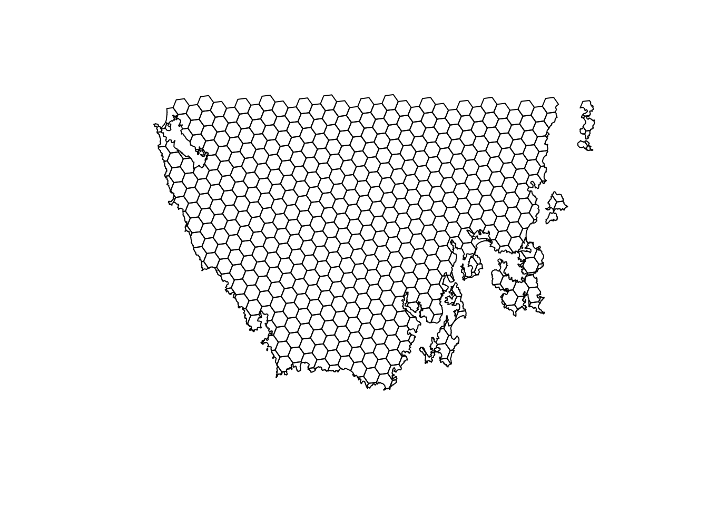
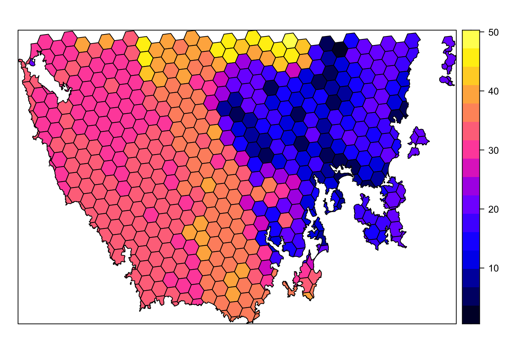
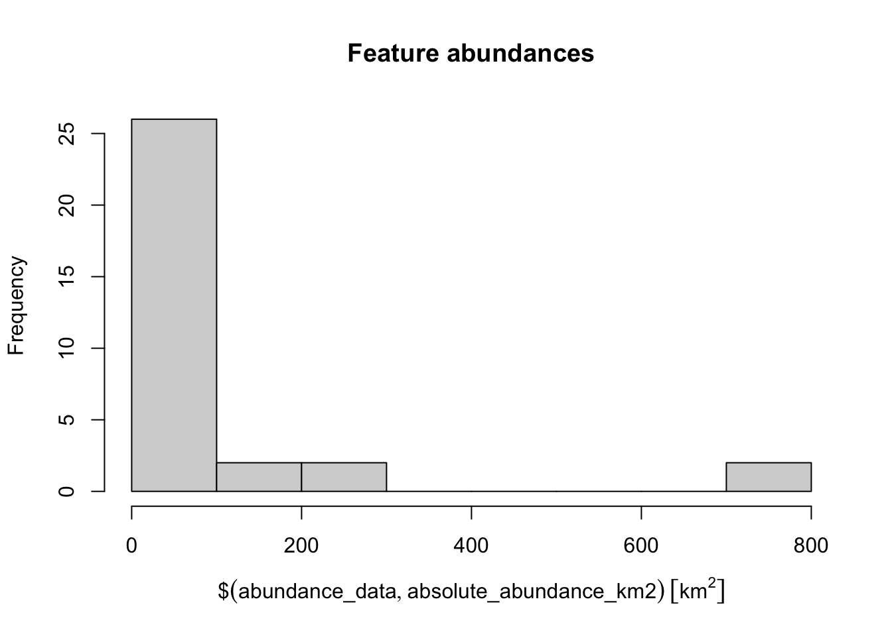
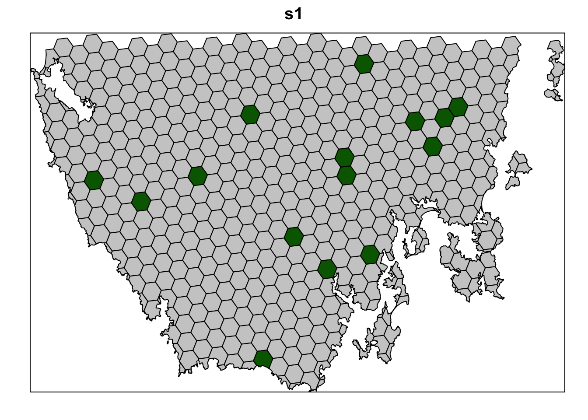
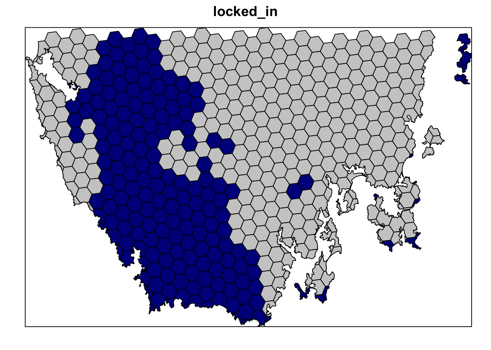
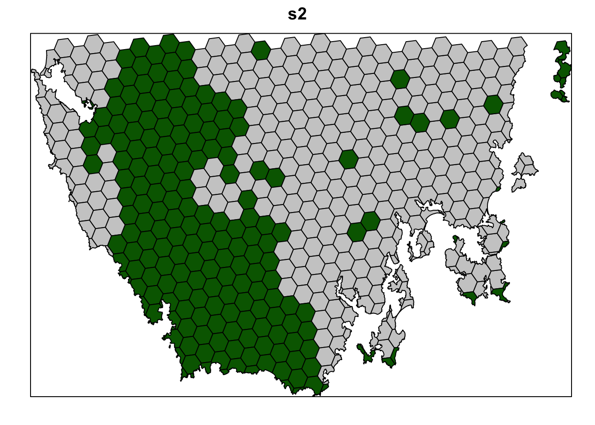
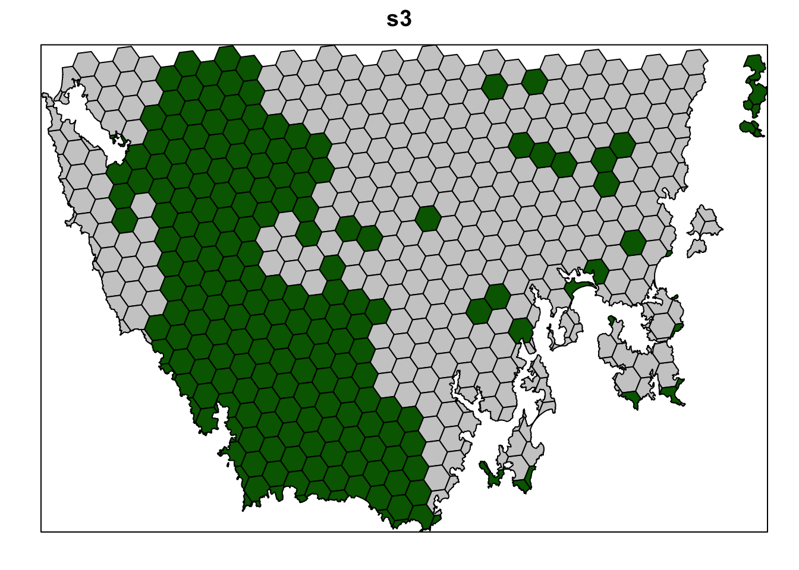
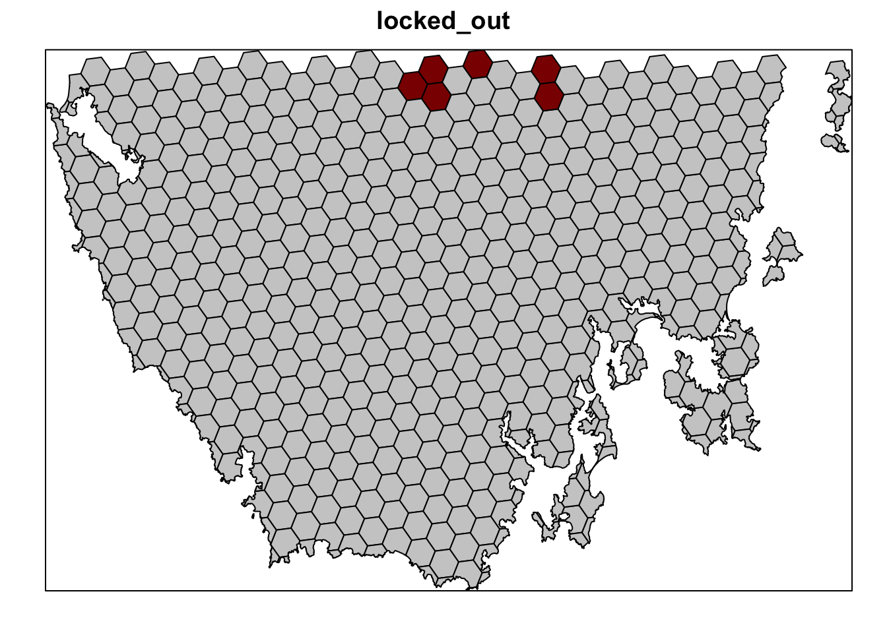
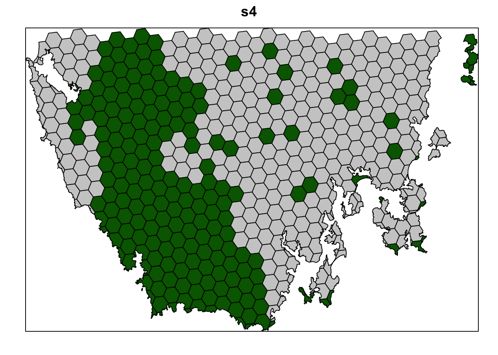
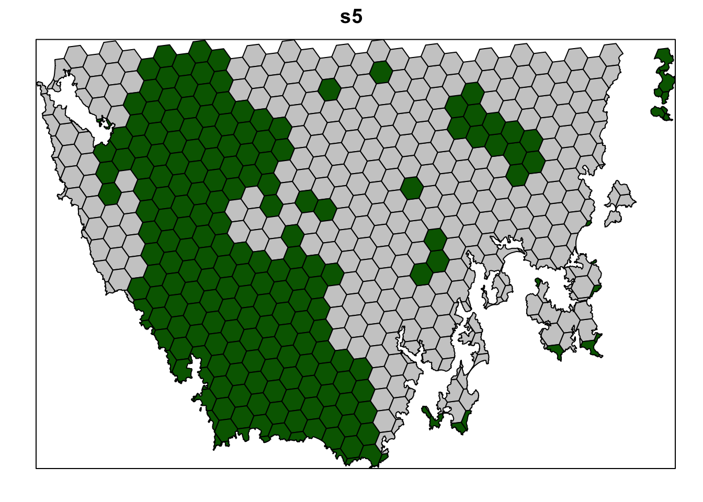

Lab 3. Reserve Planning
Jeffrey O. Hanson
2021-09-26
Learning Objectives
Introduction
This lab was created by the developer of the R package prioritizr Jeffrey O. Hanson. I made slight tweaks to streamline code and reduce text.
You open this Rmarkdown document from taylor.bren.ucsb.edu at /Courses/EDS232/eds232-ml/lab3_reserves.Rmd, save to your home folder and respond to questions within the Rmarkdown document before knitting to complete the lab.
Overview
The aim of this lab is to get you started with using the prioritizr R package for systematic conservation planning. It is not designed to give you a comprehensive overview and you will not become an expert after completing this workshop. Instead, we want to help you understand the core principles of conservation planning and guide you through some of the common tasks involved with developing prioritizations. In other words, we want to give you the knowledge base and confidence needed to start applying systematic conservation planning to your own work.
R packages
An R package is a collection of R code and documentation that can be installed to enhance the standard R environment with additional functionality. Currently, there are over fifteen thousand R packages available on CRAN. Each of these R packages are developed to perform a specific task, such as reading Excel spreadsheets, downloading satellite imagery data, downloading and cleaning protected area data, or fitting environmental niche models. In fact, R has such a diverse ecosystem of R packages, that the question is almost always not “can I use R to …?” but “what R package can I use to …?” During this workshop, we will use several R packages. To install and load these R packages, please enter the code below in the Console part of the RStudio interface and press enter. Note that you will require an Internet connection and the installation process may take some time to complete.
if (!require("librarian")){
install.packages("librarian")
library(librarian)
}
librarian::shelf(
assertthat, BiocManager, dplyr, gridExtra, here, mapview,
prioritizr, prioritizrdata,
raster, remotes, rgeos, rgdal, scales, sf, sp, stringr,
units)##
## The 'cran_repo' argument in shelf() was not set, so it will use
## cran_repo = 'https://cran.r-project.org' by default.
##
## To avoid this message, set the 'cran_repo' argument to a CRAN
## mirror URL (see https://cran.r-project.org/mirrors.html) or set
## 'quiet = TRUE'.if (!require("lpsymphony")){
BiocManager::install("lpsymphony")
library(lpsymphony)
}Data Setup
The data for this workshop are available online. The code chunk below handles downloading the data from here, saving it as data.zip, unzippig the data.zip file and moving files into dir_data. You should now have a new folder on your computer called "data/prioritizr" which contains the data files (e.g. pu.shp and vegetation.tif).
dir_data <- here("data/prioritizr")
pu_shp <- file.path(dir_data, "pu.shp")
pu_url <- "https://github.com/prioritizr/massey-workshop/raw/main/data.zip"
pu_zip <- file.path(dir_data, basename(pu_url))
vegetation_tif <- file.path(dir_data, "vegetation.tif")
dir.create(dir_data, showWarnings = F, recursive = T)
if (!file.exists(pu_shp)){
download.file(pu_url, pu_zip)
unzip(pu_zip, exdir = dir_data)
dir_unzip <- file.path(dir_data, "data")
files_unzip <- list.files(dir_unzip, full.names = T)
file.rename(
files_unzip,
files_unzip %>% str_replace("prioritizr/data", "prioritizr"))
unlink(c(pu_zip, dir_unzip), recursive = T)
}Data
Data import
Now that we have the downloaded dataset, we will need to import it into our R session. Specifically, this data was obtained from the “Introduction to Marxan” course and was originally a subset of a larger spatial prioritization project performed under contract to Australia’s Department of Environment and Water Resources. It contains vector-based planning unit data (pu.shp) and the raster-based data describing the spatial distributions of 32 vegetation classes (vegetation.tif) in southern Tasmania, Australia. Please note this dataset is only provided for teaching purposes and should not be used for any real-world conservation planning. We can import the data into our R session using the following code.
# import planning unit data
pu_data <- as(read_sf(pu_shp), "Spatial")
# format columns in planning unit data
pu_data$locked_in <- as.logical(pu_data$locked_in)
pu_data$locked_out <- as.logical(pu_data$locked_out)
# import vegetation data
veg_data <- stack(vegetation_tif)Planning unit data
The planning unit data contains spatial data describing the geometry for each planning unit and attribute data with information about each planning unit (e.g. cost values). Let’s investigate the pu_data object. The attribute data contains 5 columns with contain the following information:
id: unique identifiers for each planning unitcost: acquisition cost values for each planning unit (millions of Australian dollars).status: status information for each planning unit (only relevant with Marxan)locked_in: logical values (i.e.TRUE/FALSE) indicating if planning units are covered by protected areas or not.locked_out: logical values (i.e.TRUE/FALSE) indicating if planning units cannot be managed as a protected area because they contain are too degraded.
# print a short summary of the data
print(pu_data)## class : SpatialPolygonsDataFrame
## features : 516
## extent : 348703.2, 611932.4, 5167775, 5344516 (xmin, xmax, ymin, ymax)
## crs : +proj=utm +zone=55 +south +datum=WGS84 +units=m +no_defs
## variables : 5
## names : id, cost, status, locked_in, locked_out
## min values : 557, 3.59717531470679, 0, 0, 0
## max values : 1130, 47.238336402701, 2, 1, 1# plot the planning unit data
plot(pu_data)
# plot an interactive map of the planning unit data
mapview(pu_data)# print the structure of object
str(pu_data, max.level = 2)## Formal class 'SpatialPolygonsDataFrame' [package "sp"] with 5 slots
## ..@ data :'data.frame': 516 obs. of 5 variables:
## ..@ polygons :List of 516
## ..@ plotOrder : int [1:516] 69 104 1 122 157 190 4 221 17 140 ...
## ..@ bbox : num [1:2, 1:2] 348703 5167775 611932 5344516
## .. ..- attr(*, "dimnames")=List of 2
## ..@ proj4string:Formal class 'CRS' [package "sp"] with 1 slot
## ..$ comment: chr "TRUE"# print the class of the object
class(pu_data)## [1] "SpatialPolygonsDataFrame"
## attr(,"package")
## [1] "sp"# print the slots of the object
slotNames(pu_data)## [1] "data" "polygons" "plotOrder" "bbox" "proj4string"# print the coordinate reference system
print(pu_data@proj4string)## CRS arguments:
## +proj=utm +zone=55 +south +datum=WGS84 +units=m +no_defs# print number of planning units (geometries) in the data
nrow(pu_data)## [1] 516# print the first six rows in the data
head(pu_data@data)## id cost status locked_in locked_out
## 1 557 29.74225 0 FALSE FALSE
## 2 558 29.87703 0 FALSE FALSE
## 3 574 28.60687 0 FALSE FALSE
## 4 575 30.83416 0 FALSE FALSE
## 5 576 38.75511 0 FALSE FALSE
## 6 577 38.11618 2 TRUE FALSE# print the first six values in the cost column of the attribute data
head(pu_data$cost)## [1] 29.74225 29.87703 28.60687 30.83416 38.75511 38.11618# print the highest cost value
max(pu_data$cost)## [1] 47.23834# print the smallest cost value
min(pu_data$cost)## [1] 3.597175# print average cost value
mean(pu_data$cost)## [1] 26.87393# plot a map of the planning unit cost data
spplot(pu_data, "cost")
# plot an interactive map of the planning unit cost data
mapview(pu_data, zcol = "cost")Now, you can try and answer some questions about the planning unit data.
- How many planning units are in the planning unit data?
- What is the highest cost value?
- Is there a spatial pattern in the planning unit cost values (hint: use
plotto make a map)?
Vegetation data
The vegetation data describe the spatial distribution of 32 vegetation classes in the study area. This data is in a raster format and so the data are organized using a grid comprising square grid cells that are each the same size. In our case, the raster data contains multiple layers (also called “bands”) and each layer has corresponds to a spatial grid with exactly the same area and has exactly the same dimensionality (i.e. number of rows, columns, and cells). In this dataset, there are 32 different regular spatial grids layered on top of each other – with each layer corresponding to a different vegetation class – and each of these layers contains a grid with 164 rows, 326 columns, and 53464 cells. Within each layer, each cell corresponds to a 0.967 by 1.02 km square. The values associated with each grid cell indicate the (one) presence or (zero) absence of a given vegetation class in the cell.

Let’s explore the vegetation data.
# print a short summary of the data
print(veg_data)## class : RasterStack
## dimensions : 164, 326, 53464, 32 (nrow, ncol, ncell, nlayers)
## resolution : 967, 1020 (x, y)
## extent : 298636.7, 613878.7, 5167756, 5335036 (xmin, xmax, ymin, ymax)
## crs : +proj=utm +zone=55 +south +datum=WGS84 +units=m +no_defs
## names : vegetation.1, vegetation.2, vegetation.3, vegetation.4, vegetation.5, vegetation.6, vegetation.7, vegetation.8, vegetation.9, vegetation.10, vegetation.11, vegetation.12, vegetation.13, vegetation.14, vegetation.15, ...
## min values : 0, 0, 0, 0, 0, 0, 0, 0, 0, 0, 0, 0, 0, 0, 0, ...
## max values : 1, 1, 1, 1, 1, 1, 1, 1, 1, 1, 1, 1, 1, 1, 1, ...# plot a map of the 20th vegetation class
plot(veg_data[[20]])
# plot an interactive map of the 20th vegetation class
mapview(veg_data[[20]])# print number of rows in the data
nrow(veg_data)## [1] 164# print number of columns in the data
ncol(veg_data)## [1] 326# print number of cells in the data
ncell(veg_data)## [1] 53464# print number of layers in the data
nlayers(veg_data)## [1] 32# print resolution on the x-axis
xres(veg_data)## [1] 967# print resolution on the y-axis
yres(veg_data)## [1] 1020# print spatial extent of the grid, i.e. coordinates for corners
extent(veg_data)## class : Extent
## xmin : 298636.7
## xmax : 613878.7
## ymin : 5167756
## ymax : 5335036# print the coordinate reference system
print(veg_data@crs)## CRS arguments:
## +proj=utm +zone=55 +south +datum=WGS84 +units=m +no_defs# print a summary of the first layer in the stack
print(veg_data[[1]])## class : RasterLayer
## band : 1 (of 32 bands)
## dimensions : 164, 326, 53464 (nrow, ncol, ncell)
## resolution : 967, 1020 (x, y)
## extent : 298636.7, 613878.7, 5167756, 5335036 (xmin, xmax, ymin, ymax)
## crs : +proj=utm +zone=55 +south +datum=WGS84 +units=m +no_defs
## source : vegetation.tif
## names : vegetation.1
## values : 0, 1 (min, max)# print the value in the 800th cell in the first layer of the stack
print(veg_data[[1]][800])##
## 0# print the value of the cell located in the 30th row and the 60th column of
# the first layer
print(veg_data[[1]][30, 60])##
## 0# calculate the sum of all the cell values in the first layer
cellStats(veg_data[[1]], "sum")## [1] 17# calculate the maximum value of all the cell values in the first layer
cellStats(veg_data[[1]], "max")## [1] 1# calculate the minimum value of all the cell values in the first layer
cellStats(veg_data[[1]], "min")## [1] 0# calculate the mean value of all the cell values in the first layer
cellStats(veg_data[[1]], "mean")## [1] 0.00035239Now, you can try and answer some questions about the vegetation data.
- What part of the study area is the 13th vegetation class found in (hint: make a map)? For instance, is it in the south-eastern part of the study area?
- What proportion of cells contain the 12th vegetation class?
- Which vegetation class is the most abundant (i.e. present in the greatest number of cells)?
Gap analysis
Introduction
Before we begin to prioritize areas for protected area establishment, we should first understand how well existing protected areas are conserving our biodiversity features (i.e. native vegetation classes in Tasmania, Australia). This step is critical: we cannot develop plans to improve conservation of biodiversity if we don’t understand how well existing policies are currently conserving biodiversity! To achieve this, we can perform a “gap analysis.” A gap analysis involves calculating how well each of our biodiversity features (i.e. vegetation classes in this exercise) are represented (covered) by protected areas. Next, we compare current representation by protected areas of each feature (e.g. 5% of their spatial distribution covered by protected areas) to a target threshold (e.g. 20% of their spatial distribution covered by protected areas). This target threshold denotes the minimum amount (e.g. minimum proportion of spatial distribution) that we need of each feature to be represented in the protected area system. Ideally, targets should be based on an estimate of how much area or habitat is needed for ecosystem function or species persistence. In practice, targets are generally set using simple rules of thumb (e.g. 10% or 20%), policy (17%; https://www.cbd.int/sp/targets/rationale/target-11) or standard practices (e.g. setting targets for species based on geographic range size) (Butchart et al. 2015; Rodrigues et al. 2004).
Feature abundance
Now we will perform some preliminary calculations to explore the data. First, we will calculate how much of each vegetation feature occurs inside each planning unit (i.e. the abundance of the features). To achieve this, we will use the problem function to create an empty conservation planning problem that only contains the planning unit and biodiversity data. We will then use the feature_abundances function to calculate the total amount of each feature in each planning unit.
# create prioritizr problem with only the data
p0 <- problem(pu_data, veg_data, cost_column = "cost")
# print empty problem,
# we can see that only the cost and feature data are defined
print(p0)## Conservation Problem
## planning units: SpatialPolygonsDataFrame (516 units)
## cost: min: 3.59718, max: 47.23834
## features: vegetation.1, vegetation.2, vegetation.3, ... (32 features)
## objective: none
## targets: none
## decisions: default
## constraints: <none>
## penalties: <none>
## portfolio: default
## solver: default# calculate amount of each feature in each planning unit
abundance_data <- feature_abundances(p0)
# print abundance data
print(abundance_data)## # A tibble: 32 × 3
## feature absolute_abundance relative_abundance
## <chr> <dbl> <dbl>
## 1 vegetation.1 16.0 1
## 2 vegetation.2 14.3 1
## 3 vegetation.3 10.4 1
## 4 vegetation.4 17.8 1
## 5 vegetation.5 13.0 1
## 6 vegetation.6 14.3 1
## 7 vegetation.7 20.0 1
## 8 vegetation.8 14.0 1
## 9 vegetation.9 18.0 1
## 10 vegetation.10 20.0 1
## # … with 22 more rows# note that only the first ten rows are printed,
# this is because the abundance_data object is a tibble (i.e. tbl_df) object
# and not a standard data.frame object
print(class(abundance_data))## [1] "tbl_df" "tbl" "data.frame"# we can print all of the rows in abundance_data like this
print(abundance_data, n = Inf)## # A tibble: 32 × 3
## feature absolute_abundance relative_abundance
## <chr> <dbl> <dbl>
## 1 vegetation.1 16.0 1
## 2 vegetation.2 14.3 1
## 3 vegetation.3 10.4 1
## 4 vegetation.4 17.8 1
## 5 vegetation.5 13.0 1
## 6 vegetation.6 14.3 1
## 7 vegetation.7 20.0 1
## 8 vegetation.8 14.0 1
## 9 vegetation.9 18.0 1
## 10 vegetation.10 20.0 1
## 11 vegetation.11 23.6 1
## 12 vegetation.12 748. 1
## 13 vegetation.13 126. 1
## 14 vegetation.14 10.5 1
## 15 vegetation.15 17.5 1
## 16 vegetation.16 15.0 1
## 17 vegetation.17 213. 1
## 18 vegetation.18 14.3 1
## 19 vegetation.19 17.1 1
## 20 vegetation.20 21.4 1
## 21 vegetation.21 18.6 1
## 22 vegetation.22 297. 1
## 23 vegetation.23 20.3 1
## 24 vegetation.24 165. 1
## 25 vegetation.25 716. 1
## 26 vegetation.26 24.0 1
## 27 vegetation.27 18.8 1
## 28 vegetation.28 17.5 1
## 29 vegetation.29 24.7 1
## 30 vegetation.30 59.0 1
## 31 vegetation.31 60.0 1
## 32 vegetation.32 32 1The abundance_data object contains three columns. The feature column contains the name of each feature (derived from names(veg_data)), the absolute_abundance column contains the total amount of each feature in all the planning units, and the relative_abundance column contains the total amount of each feature in the planning units expressed as a proportion of the total amount in the underlying raster data. Since all the raster cells containing vegetation overlap with the planning units, all of the values in the relative_abundance column are equal to one (meaning 100%). Now let’s add a new column with the feature abundances expressed in area units (i.e. km2).
# add new column with feature abundances in km^2
abundance_data$absolute_abundance_km2 <-
(abundance_data$absolute_abundance * prod(res(veg_data))) %>%
set_units(m^2) %>%
set_units(km^2)
# print abundance data
print(abundance_data)## # A tibble: 32 × 4
## feature absolute_abundance relative_abundance absolute_abundance_km2
## <chr> <dbl> <dbl> [km^2]
## 1 vegetation.1 16.0 1 15.8
## 2 vegetation.2 14.3 1 14.1
## 3 vegetation.3 10.4 1 10.2
## 4 vegetation.4 17.8 1 17.6
## 5 vegetation.5 13.0 1 12.8
## 6 vegetation.6 14.3 1 14.1
## 7 vegetation.7 20.0 1 19.7
## 8 vegetation.8 14.0 1 13.9
## 9 vegetation.9 18.0 1 17.8
## 10 vegetation.10 20.0 1 19.7
## # … with 22 more rowsNow let’s explore the abundance data.
# calculate the average abundance of the features
mean(abundance_data$absolute_abundance_km2)## 86.82948 [km^2]# plot histogram of the features' abundances
hist(abundance_data$absolute_abundance_km2, main = "Feature abundances")
# find the abundance of the feature with the largest abundance
max(abundance_data$absolute_abundance_km2)## 737.982 [km^2]# find the name of the feature with the largest abundance
abundance_data$feature[which.max(abundance_data$absolute_abundance_km2)]## [1] "vegetation.12"Now, try to answer the following questions.
- What is the median abundance of the features (hint:
median)? - What is the name of the feature with smallest abundance?
- How many features have a total abundance greater than 100 km^2 (hint: use
sum(abundance_data$absolute_abundance_km2 > set_units(threshold, km^2)with the correctthresholdvalue)?
Feature representation
After calculating the total amount of each feature in the planning units (i.e. the features’ abundances), we will now calculate the amount of each feature in the planning units that are covered by protected areas (i.e. feature representation by protected areas). We can complete this task using the eval_feature_representation_summary() function. This function requires (i) a conservation problem object with the planning unit and biodiversity data and also (ii) an object representing a solution to the problem (i.e an object in the same format as the planning unit data with values indicating if the planning units are selected or not).
# create column in planning unit data with binary values (zeros and ones)
# indicating if a planning unit is covered by protected areas or not
pu_data$pa_status <- as.numeric(pu_data$locked_in)
# calculate feature representation by protected areas
repr_data <- eval_feature_representation_summary(p0, pu_data[, "pa_status"])
# print feature representation data
print(repr_data)## # A tibble: 32 × 5
## summary feature total_amount absolute_held relative_held
## <chr> <chr> <dbl> <dbl> <dbl>
## 1 overall vegetation.1 16.0 0 0
## 2 overall vegetation.2 14.3 0 0
## 3 overall vegetation.3 10.4 0 0
## 4 overall vegetation.4 17.8 0 0
## 5 overall vegetation.5 13.0 0 0
## 6 overall vegetation.6 14.3 0 0
## 7 overall vegetation.7 20.0 0 0
## 8 overall vegetation.8 14.0 0 0
## 9 overall vegetation.9 18.0 0.846 0.0470
## 10 overall vegetation.10 20.0 0 0
## # … with 22 more rowsSimilar to the abundance data before, the repr_data object contains three columns. The feature column contains the name of each feature, the absolute_held column shows the total amount of each feature held in the solution (i.e. the planning units covered by protected areas), and the relative_held column shows the proportion of each feature held in the solution (i.e. the proportion of each feature’s spatial distribution held in protected areas). Since the absolute_held values correspond to the number of grid cells in the veg_data object with overlap with protected areas, let’s convert them to area units (i.e. km2) so we can report them.
# add new column with the areas represented in km^2
repr_data$absolute_held_km2 <-
(repr_data$absolute_held * prod(res(veg_data))) %>%
set_units(m^2) %>%
set_units(km^2)
# print representation data
print(repr_data)## # A tibble: 32 × 6
## summary feature total_amount absolute_held relative_held absolute_held_k…
## <chr> <chr> <dbl> <dbl> <dbl> [km^2]
## 1 overall vegetation… 16.0 0 0 0
## 2 overall vegetation… 14.3 0 0 0
## 3 overall vegetation… 10.4 0 0 0
## 4 overall vegetation… 17.8 0 0 0
## 5 overall vegetation… 13.0 0 0 0
## 6 overall vegetation… 14.3 0 0 0
## 7 overall vegetation… 20.0 0 0 0
## 8 overall vegetation… 14.0 0 0 0
## 9 overall vegetation… 18.0 0.846 0.0470 0.834
## 10 overall vegetation… 20.0 0 0 0
## # … with 22 more rowsNow let’s investigate how well the species are represented.
- What is the average proportion of the features held in protected areas (hint: use
mean(table$relative_held)with the correcttablename)? - If we set a target of 10% coverage by protected areas, how many features fail to meet this target (hint: use
sum(table$relative_held >= target_value)with the correcttablename)? - If we set a target of 20% coverage by protected areas, how many features fail to meet this target?
- Is there a relationship between the total abundance of a feature and how well it is represented by protected areas (hint:
plot(abundance_data$absolute_abundance ~ repr_data$relative_held))?
Spatial prioritizations
Introduction
Here we will develop prioritizations to identify priority areas for protected area establishment. Its worth noting that prioritizr is a decision support tool (similar to Marxan and Zonation). This means that it is designed to help you make decisions—it can’t make decisions for you.
Starting out simple
To start things off, let’s keep things simple. Let’s create a prioritization using the minimum set formulation of the reserve selection problem. This formulation means that we want a solution that will meet the targets for our biodiversity features for minimum cost. Here, we will set 5% targets for each vegetation class and use the data in the cost column to specify acquisition costs. Although we strongly recommend using Gurobi to solve problems (with add_gurobi_solver), we will use the lpsymphony solver in this workshop since it is easier to install. The Gurobi solver is much faster than the lpsymphony solver (see here for installation instructions).
# print planning unit data
print(pu_data)## class : SpatialPolygonsDataFrame
## features : 516
## extent : 348703.2, 611932.4, 5167775, 5344516 (xmin, xmax, ymin, ymax)
## crs : +proj=utm +zone=55 +south +datum=WGS84 +units=m +no_defs
## variables : 6
## names : id, cost, status, locked_in, locked_out, pa_status
## min values : 557, 3.59717531470679, 0, 0, 0, 0
## max values : 1130, 47.238336402701, 2, 1, 1, 1# make prioritization problem
p1_rds <- file.path(dir_data, "p1.rds")
if (!file.exists(p1_rds)){
p1 <- problem(pu_data, veg_data, cost_column = "cost") %>%
add_min_set_objective() %>%
add_relative_targets(0.05) %>% # 5% representation targets
add_binary_decisions() %>%
add_lpsymphony_solver()
saveRDS(p1, p1_rds)
}
p1 <- readRDS(p1_rds)
# print problem
print(p1)## Conservation Problem
## planning units: SpatialPolygonsDataFrame (516 units)
## cost: min: 3.59718, max: 47.23834
## features: vegetation.1, vegetation.2, vegetation.3, ... (32 features)
## objective: Minimum set objective
## targets: Relative targets [targets (min: 0.05, max: 0.05)]
## decisions: Binary decision
## constraints: <none>
## penalties: <none>
## portfolio: default
## solver: Lpsymphony [first_feasible (0), gap (0.1), time_limit (2147483647), verbose (1)]# solve problem
s1 <- solve(p1)
# print solution, the solution_1 column contains the solution values
# indicating if a planning unit is (1) selected or (0) not
print(s1)## class : SpatialPolygonsDataFrame
## features : 516
## extent : 348703.2, 611932.4, 5167775, 5344516 (xmin, xmax, ymin, ymax)
## crs : +proj=utm +zone=55 +south +datum=WGS84 +units=m +no_defs
## variables : 7
## names : id, cost, status, locked_in, locked_out, pa_status, solution_1
## min values : 557, 3.59717531470679, 0, 0, 0, 0, 0
## max values : 1130, 47.238336402701, 2, 1, 1, 1, 1# calculate number of planning units selected in the prioritization
eval_n_summary(p1, s1[, "solution_1"])## # A tibble: 1 × 2
## summary cost
## <chr> <dbl>
## 1 overall 15# calculate total cost of the prioritization
eval_cost_summary(p1, s1[, "solution_1"])## # A tibble: 1 × 2
## summary cost
## <chr> <dbl>
## 1 overall 385.# plot solution
# selected = green, not selected = grey
spplot(s1, "solution_1", col.regions = c("grey80", "darkgreen"), main = "s1",
colorkey = FALSE)
Now let’s examine the solution.
- How many planing units were selected in the prioritization? What proportion of planning units were selected in the prioritization?
- Is there a pattern in the spatial distribution of the priority areas?
- Can you verify that all of the targets were met in the prioritization (hint:
eval_feature_representation_summary(p1, s1[, "solution_1"]))?
Adding complexity
Our first prioritization suffers many limitations, so let’s add additional constraints to the problem to make it more useful. First, let’s lock in planing units that are already by covered protected areas. If some vegetation communities are already secured inside existing protected areas, then we might not need to add as many new protected areas to the existing protected area system to meet their targets. Since our planning unit data (pu_da) already contains this information in the locked_in column, we can use this column name to specify which planning units should be locked in.
# plot locked_in data
# TRUE = blue, FALSE = grey
spplot(pu_data, "locked_in", col.regions = c("grey80", "darkblue"),
main = "locked_in", colorkey = FALSE)
# make prioritization problem
p2_rds <- file.path(dir_data, "p2.rds")
if (!file.exists(p2_rds)){
p2 <- problem(pu_data, veg_data, cost_column = "cost") %>%
add_min_set_objective() %>%
add_relative_targets(0.05) %>%
add_locked_in_constraints("locked_in") %>%
add_binary_decisions() %>%
add_lpsymphony_solver()
saveRDS(p2, p2_rds)
}
p2 <- readRDS(p2_rds)
# print problem
print(p2)## Conservation Problem
## planning units: SpatialPolygonsDataFrame (516 units)
## cost: min: 3.59718, max: 47.23834
## features: vegetation.1, vegetation.2, vegetation.3, ... (32 features)
## objective: Minimum set objective
## targets: Relative targets [targets (min: 0.05, max: 0.05)]
## decisions: Binary decision
## constraints: <Locked in planning units [198 locked units]>
## penalties: <none>
## portfolio: default
## solver: Lpsymphony [first_feasible (0), gap (0.1), time_limit (2147483647), verbose (1)]# solve problem
s2 <- solve(p2)
# plot solution
# selected = green, not selected = grey
spplot(s2, "solution_1", col.regions = c("grey80", "darkgreen"), main = "s2",
colorkey = FALSE)
Let’s pretend that we talked to an expert on the vegetation communities in our study system and they recommended that a 10% target was needed for each vegetation class. So, equipped with this information, let’s set the targets to 10%.
# make prioritization problem
p3_rds <- file.path(dir_data, "p3.rds")
if (!file.exists(p3_rds)){
p3 <- problem(pu_data, veg_data, cost_column = "cost") %>%
add_min_set_objective() %>%
add_relative_targets(0.1) %>%
add_locked_in_constraints("locked_in") %>%
add_binary_decisions() %>%
add_lpsymphony_solver()
saveRDS(p3, p3_rds)
}
p3 <- readRDS(p3_rds)
# print problem
print(p3)## Conservation Problem
## planning units: SpatialPolygonsDataFrame (516 units)
## cost: min: 3.59718, max: 47.23834
## features: vegetation.1, vegetation.2, vegetation.3, ... (32 features)
## objective: Minimum set objective
## targets: Relative targets [targets (min: 0.1, max: 0.1)]
## decisions: Binary decision
## constraints: <Locked in planning units [198 locked units]>
## penalties: <none>
## portfolio: default
## solver: Lpsymphony [first_feasible (0), gap (0.1), time_limit (2147483647), verbose (1)]# solve problem
s3 <- solve(p3)
# plot solution
# selected = green, not selected = grey
spplot(s3, "solution_1", col.regions = c("grey80", "darkgreen"), main = "s3",
colorkey = FALSE)
Next, let’s lock out highly degraded areas. Similar to before, this information is present in our planning unit data so we can use the locked_out column name to achieve this.
# plot locked_out data
# TRUE = red, FALSE = grey
spplot(pu_data, "locked_out", col.regions = c("grey80", "darkred"),
main = "locked_out", colorkey = FALSE)
# make prioritization problem
p4_rds <- file.path(dir_data, "p4.rds")
if (!file.exists(p4_rds)){
p4 <- problem(pu_data, veg_data, cost_column = "cost") %>%
add_min_set_objective() %>%
add_relative_targets(0.1) %>%
add_locked_in_constraints("locked_in") %>%
add_locked_out_constraints("locked_out") %>%
add_binary_decisions() %>%
add_lpsymphony_solver()
saveRDS(p4, p4_rds)
}
p4 <- readRDS(p4_rds)# print problem
print(p4)## Conservation Problem
## planning units: SpatialPolygonsDataFrame (516 units)
## cost: min: 3.59718, max: 47.23834
## features: vegetation.1, vegetation.2, vegetation.3, ... (32 features)
## objective: Minimum set objective
## targets: Relative targets [targets (min: 0.1, max: 0.1)]
## decisions: Binary decision
## constraints: <Locked out planning units [6 locked units]
## Locked in planning units [198 locked units]>
## penalties: <none>
## portfolio: default
## solver: Lpsymphony [first_feasible (0), gap (0.1), time_limit (2147483647), verbose (1)]# solve problem
s4 <- solve(p4)
# plot solution
# selected = green, not selected = grey
spplot(s4, "solution_1", col.regions = c("grey80", "darkgreen"), main = "s4",
colorkey = FALSE)
Now, let’s compare the solutions.
- What is the cost of the planning units selected in
s2,s3, ands4? - How many planning units are in
s2,s3, ands4? - Do the solutions with more planning units have a greater cost? Why (or why not)?
- Why does the first solution (
s1) cost less than the second solution with protected areas locked into the solution (s2)? - Why does the third solution (
s3) cost less than the fourth solution solution with highly degraded areas locked out (s4)?
Penalizing fragmentation
Plans for protected area systems should promote connectivity. However, the prioritizations we have made so far have been highly fragmented. To address this issue, we can add penalties to our conservation planning problem to penalize fragmentation. These penalties work by specifying a trade-off between the primary objective (here, solution cost) and fragmentation (i.e. total exposed boundary length) using a penalty value. If we set the penalty value too low, then we will end up with a solution that is nearly identical to the previous solution. If we set the penalty value too high, then prioritizr will (1) take a long time to solve the problem and (2) we will end up with a solution that contains lots of extra planning units that are not needed. This is because the minimizing fragmentation is considered so much more important than solution cost that the optimal solution is simply to select as many planning units as possible.
As a rule of thumb, we generally want penalty values between 0.00001 and 0.01. However, finding a useful penalty value requires calibration. The “correct” penalty value depends on the size of the planning units, the main objective values (e.g. cost values), and the effect of fragmentation on biodiversity persistence. Let’s create a new problem that is similar to our previous problem (p4)—except that it contains boundary length penalties—and solve it. Since our planning unit data is in a spatial format (i.e. vector or raster data), prioritizr can automatically calculate the boundary data for us.
# make prioritization problem
p5_rds <- file.path(dir_data, "p5.rds")
if (!file.exists(p5_rds)){
p5 <- problem(pu_data, veg_data, cost_column = "cost") %>%
add_min_set_objective() %>%
add_boundary_penalties(penalty = 0.001) %>%
add_relative_targets(0.1) %>%
add_locked_in_constraints("locked_in") %>%
add_locked_out_constraints("locked_out") %>%
add_binary_decisions() %>%
add_lpsymphony_solver()
saveRDS(p5, p5_rds)
}
p5 <- readRDS(p5_rds)
# print problem
print(p5)## Conservation Problem
## planning units: SpatialPolygonsDataFrame (516 units)
## cost: min: 3.59718, max: 47.23834
## features: vegetation.1, vegetation.2, vegetation.3, ... (32 features)
## objective: Minimum set objective
## targets: Relative targets [targets (min: 0.1, max: 0.1)]
## decisions: Binary decision
## constraints: <Locked in planning units [198 locked units]
## Locked out planning units [6 locked units]>
## penalties: <Boundary penalties [edge factor (min: 0.5, max: 0.5), penalty (0.001), zones]>
## portfolio: default
## solver: Lpsymphony [first_feasible (0), gap (0.1), time_limit (2147483647), verbose (1)]# solve problem,
# note this will take a bit longer than the previous runs
s5 <- solve(p5)
# print solution
print(s5)## class : SpatialPolygonsDataFrame
## features : 516
## extent : 348703.2, 611932.4, 5167775, 5344516 (xmin, xmax, ymin, ymax)
## crs : +proj=utm +zone=55 +south +datum=WGS84 +units=m +no_defs
## variables : 7
## names : id, cost, status, locked_in, locked_out, pa_status, solution_1
## min values : 557, 3.59717531470679, 0, 0, 0, 0, 0
## max values : 1130, 47.238336402701, 2, 1, 1, 1, 1# plot solution
# selected = green, not selected = grey
spplot(s5, "solution_1", col.regions = c("grey80", "darkgreen"), main = "s5",
colorkey = FALSE)
Now let’s compare the solutions to the problems with (s5) and without (s4) the boundary length penalties.
- What is the cost the fourth (
s4) and fifth (s5) solutions? Why does the fifth solution (s5) cost more than the fourth (s4) solution? - Try setting the penalty value to 0.000000001 (i.e.
1e-9) instead of 0.001. What is the cost of the solution now? Is it different from the fourth solution (s4) (hint: try plotting the solutions to visualize them)? Is this is a useful penalty value? Why (or why not)? - Try setting the penalty value to 0.5. What is the cost of the solution now? Is it different from the fourth solution (
s4) (hint: try plotting the solutions to visualize them)? Is this a useful penalty value? Why (or why not)?